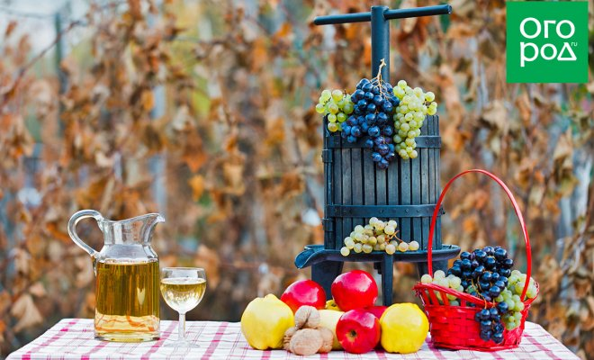
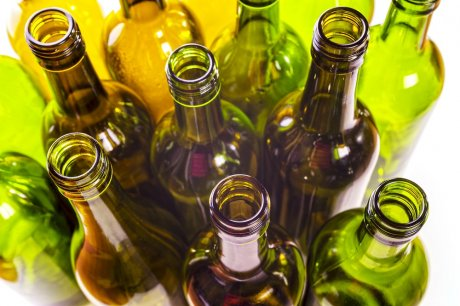
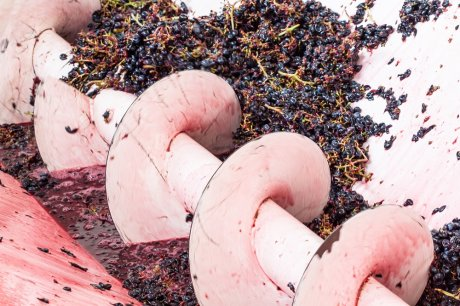
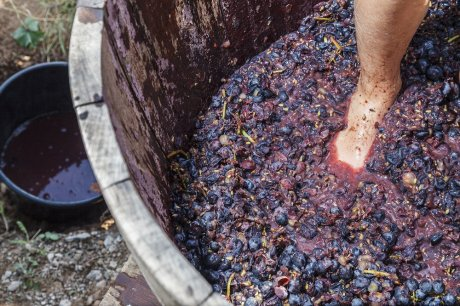
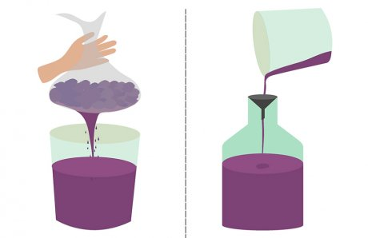
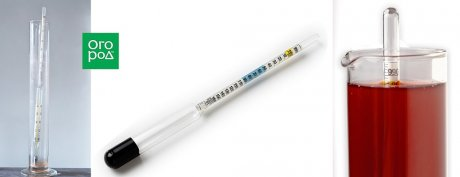

Kacso Sandor
Даже имея хорошо плодоносящий участок, не многие дачники сразу решаются готовить собственное вино в домашних условиях. Большинству этот процесс кажется слишком длительным и хлопотным, да и результат бывает предсказать сложно. Постараемся развеять ваши сомнения – это вполне реально сделать каждому даже без дорогостоящего оборудования!
Если вы, прочитав нашу статью о том, как приготовить вкусное домашнее вино, решили самостоятельно освоить этот увлекательный процесс, в первую очередь нужно "вооружиться" информацией. Помимо энтузиазма и собственно растительного сырья, вам понадобятся пусть на первое время и нехитрые, но буквально необходимые для начинающего винодела приспособления, призванные облегчить этот процесс.
Некоторые умельцы часть рекомендованного для начинающих виноделов оборудования изготавливают кустарным способом из подручных материалов или заменяют приборы схожими по функциям "самоделками" (например, все знают, как вместо промышленного гидрозатвора на бутылках со зреющим алкоголем использовать обычную резиновую перчатку). Сделать так же или сразу потратиться на все необходимые мелочи – решать вам. Наше дело обозначить вам перечень нужных приспособлений.
Итак, список необходимого оборудования и тары для домашнего виноделия.
1. Емкости для сырья, зреющего виноматериала и хранения готового продукта

Это всевозможные банки и бутыли различного размера. Сразу скажем, идеальным материалом для любых пищевых продуктов является стекло, которое химически инертно (не вступает ни в какие реакции с компонентами содержимого), не впитывает посторонние вкусы и запахи. Кроме того, стекло прозрачно, что позволит вам наблюдать за состоянием содержимого – изменило ли оно цвет, увеличилось ли в объеме, как активно идет процесс брожения и т.д.
Если нужно искать альтернативу стеклянным емкостям (некоторые считают, что они очень дороги, тяжелы или хрупки в транспортировке), выбирайте тару эмалированную, которая схожа по свойствам. Также для брожения используется тара пластиковая (пластмассовая). Искушенные виноделы могут приобретать даже специализированные дубовые бочонки для хранения вина, но начинающему нет нужды так тратиться, тем более что работа с деревянной тарой имеет свои нюансы и секреты в плане ее подготовки к контакту с вином и хранения.
Что из материалов не стоит использовать для винной тары? Это медные, стальные и алюминиевые емкости. Все они способны так или иначе вступать в контакт с содержимым и портить его вкус и состав.
2. Устройство для измельчения растительного сырья

Прежде чем приготовить любое домашнее вино, собранное растительное сырье для него после предварительной очистки от гребней, плодоножек, веточек и прочих ненужных "деталей" нужно измельчить. Это делают обычно для винограда, а также для крупных и "жестких" плодов вроде яблок и груш. "Мягкое" сырье вроде малины или вишни возможно прессовать сразу, без предварительного измельчения.
Для этого процесса даже разработано несколько вариантов соответствующего оборудования и небольших технических приспособлений. Это и механические ручные инструменты, и электрическая техника для возможности ускоренной обработки.
Разумеется, если у вас менее 10 кг фруктов или ягод, вы можете волевым усилием измельчить все необходимое при помощи ножа, ручной сечки или кухонного комбайна. Но если объемы сырья гораздо больше, согласитесь – почему не воспользоваться специально придуманными "помощниками"? Их вы можете найти в соответствующих магазинах под наименованиями "измельчитель для фруктов", "дробилка для винограда" и т.д. Впрочем, как было сказано выше – некоторые умельцы приспособились делать такие агрегаты самостоятельно, например, заложив в их основу бензопилу, дрель с миксером или даже движок от стиральной машины.
3. Устройство для отжима и прессования виноматериала

После измельчения сырья можно приступать к его прессованию (отжиму), чтобы извлечь необходимый сок из приготовленных фруктов или ягод – это необходимый этап в виноделии.
Помните кадры из знаменитой кинокомедии, где герой Челентано под зажигательную музыку давил ногами виноград в огромном чане? В винодельческих регионах в сельской местности так делали веками – а кое где продолжают и поныне, несмотря на изобретение высокотехнологичных приспособлений для этих целей.
Так что вы опять-таки можете выбирать – или вручную маленькими объемами выжимать измельченную мякоть сквозь марлю или самодельные приспособления вроде пластиковых ведер с проделанными в стенках отверстиями, или использовать винтовые ручные (механические), гидравлические и мембранные электрические прессы разного объема, которые нетрудно приобрести даже в интернете. Цены на самые простые варианты объемом всего на 2-3 л начинаются примерно с 3 000 руб.
4. Гидрозатвор
В процессе созревания вина под влиянием теплого воздуха измельченный виноматериал начинает бродить – сахар, заключающийся в нем, перерабатывается дрожжами в углекислоту и алкоголь.
А чтобы в процессе накопления газов бутыли не "взорвались" от избытка этого самого углекислого газа, вместо плотно прилегающих крышек на этом этапе для емкостей используют гидрозатворы или приспособления, выполняющие их функции. Некоторые начинающие виноделы интересуются – почему не оставить в таком случае емкости с бродящим виноматериалом полностью открытыми? Из-за того, что в этом случае постоянное соприкосновение материала с воздухом может повлечь за собой порчу сусла (окисление, синтез уксусной кислоты).
Итак, в виноделии гидравлический (водный) затвор – устройство-клапан для постепенного стравливания излишков углекислого газа и недопущения контакта зреющего вина с кислородом и микроорганизмами воздуха. Обычно он представляет собою особым образом изогнутую полую трубку-змеевик, которую перед применением заполняют водой. Установка гидрозатвора на емкость выполняется при помощи уплотнительной резинки.
Если не хотите искать в продаже гидрозатвор или действующие по его принципу специальные бродильные шпунты для вина, можете соорудить подобный прибор самостоятельно, это совсем не сложно.
Например, можно закрыть бродильную емкость плотной пробкой, вставить в нее насквозь гибкую трубку и герметизировать место соединения (например, клеем), а другой конец трубки опустить в банку с водой. Важно – диаметр трубки не должен быть слишком малым, чтобы в процессе она не забивалась пеной.
Часто используется и гораздо более простая технология, когда на горлышко емкости с бродящим суслом плотно надевается резиновая перчатка (место крепления лучше дополнительно укрепить резинкой или толстыми нитками), проколотая в нескольких местах иголкой. При активном брожении перчатка надувается, когда процесс заканчивается, – снова сдувается.
5. Фильтры для процеживания (очистки) виноматериала

В процессе виноделия на дне емкостей со временем регулярно собирается осадок, а на стенках скапливаются отработанные дрожжи. Если не убирать их, качество напитка будет ухудшаться.
"Снять вино с осадка" означает – аккуратно перелить его в другую чистую емкость. В промышленных условиях для этого используются специальные насосы с очистительными фильтрами, исключающими попадание в напиток мути и различных загрязнений. В домашних условиях виноделы обычно переливают жидкости вручную, используя фильтры самодельные. В качестве таковых обычно выступает "редкая" ткань вроде марли, где нити не прилегают друг к другу вплотную, хотя набор готовых специализированных фильтров для виноделия (картонных, тканевых, пластиковых и т.п.) можно без труда приобрести.
6. Ареометр и рефрактометр

Если хотите делать вино не "на глазок", а по всем правилам, придется также приобрести специальные приборы-ареометры. Их несколько разновидностей (спиртомер, сахаромер, гидрометр, виномер) и нужны они для определения удельной плотности жидкости, а также количества в ней спирта, сусла и сахара. Этим же целям, только работая несколько по другому принципу, служат приборы-рефрактометры. Знание вышеуказанных параметров помогает регулировать рецептуру, влиять на процесс брожения и получить вино определенного типа и крепости.
Виноделие – очень увлекательное занятие с прекрасным результатом. Если сделать все правильно! Надеемся, наш материал поможет начинающим виноделам сориентироваться в многообразии предлагаемого оборудования для домашнего производства вина и оптимизировать процесс.